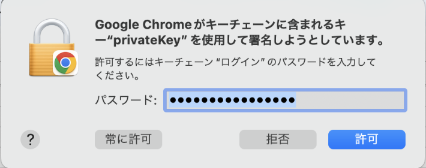

4.3. 富岳ウェブサイトへの接続手順¶
ここでは、富岳ウェブサイトへのアクセス方法について説明します。
- Webブラウザを用いて、次のURLへアクセスします。
注釈
富岳ウェブサイトは、Mozilla FirefoxとGoogle Chromeで動作確認を実施しています。他のWebブラウザをご利用の場合に動作に不具合が発生した場合は、動作確認済のWebブラウザをご利用ください。なお、Microsoft Internet Explorerを利用した場合は公開鍵登録で異常終了することが確認されています。
脆弱性対応のため、富岳ウェブサイトでは古いSSL接続を禁止しており、TLS 1.2またはTLS1.3接続のみ受け付けます。お使いのWebブラウザの設定によっては接続できない場合があるので、以下のとおりTLS 1.2以降を使用するように適宜設定を変更してください。
[Firefoxの設定変更方法]
アドレスバーにabout:configと入力しEnterキーを押す
security.tls.versionで検索する「security.tls.version.max」が4（TLS 1.3まで有効）になっていることを確認する
4より小さい値の場合は、4を設定します
クライアント証明書の選択ダイアログが表示されたら、利用するローカルアカウントのクライアント証明書を選択します。
Firefoxのダイアログ例
Chromeのダイアログ例
パスワードの入力ダイアログに、クライアント証明書のインストール時に登録した秘密鍵のパスワードを入力します。macOSのキーチェーンを利用している場合はキーチェーンのパスワードを入力します。
Firefoxのダイアログ例
キーチェーン（macOS）のダイアログ例
キーチェーンのパスワード（通常はパソコンのログインパスワードと同じ）を入力します。
 注釈
MacでChrome利用時にキーチェーンのパスワード入力を何度も求められる場合は、パスワード入力ダイアログで[常に許可]をクリックしてください。
クライアント証明書の認証に成功すると、次のような画面が表示されます。
ログアウト
富岳ウェブサイトはログアウトの機能を持っていません。 富岳ウェブサイトの利用を完全に終了させたい場合は使用中のWebブラウザを終了してください。
クライアント証明書(アカウント)を復数所持している場合、別のアカウントに切り換えるには以下に記載するどちらかの方法で変更することが可能です。
Webブラウザを終了して再度富岳ウェブサイトにアクセスし、着目のクライアント証明書を選択する
別のWebブラウザ（Firrfox or Google Chrome）で富岳ウェブサイトにアクセスし、着目のクライアント証明書を選択する
{kind=link}
{kind=link}
{kind=link}
{kind=link}
{kind=link}